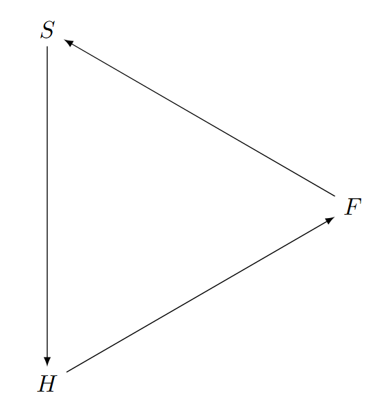

Section 12.2 Finite State Machines in Sage
Although Sage includes a dedicated built-in rich module to handle various types of state machines, it may not always be sufficient to address certain use cases or implement specific custom behaviors of the machine. Additionally, the built-in module allows state machines to be defined and constructed in different ways, providing greater flexibility and making it more suitable from a programmer’s perspective. However, it may not fully conform to the precise definition given earlier. This highlights that it is still possible to model, construct, display, and run relatively simple state machines by utilizing general-purpose tools, such as graphs and transition matrices, to represent and operate on state machines.
Subsection 12.2.1 The Elevator State Machine
Let’s design a basic controller to an elevator to show the process of defining states, creating a state transition graph, visualizing the state machine, and simulating its execution in Sage.
Consider a 3-level elevator (floors 1 through 3). The elevator has 3 buttons for users to select the destination floor (only one can be selected at a time). Depending on the current position and the selected floor, the elevator can go up, go down, or remain on the same floor.
Subsection 12.2.1.1 Description of the Elevator FSM
This elevator system can be modeled and simulated using a finite-state machine with states \(S=\{f_1, f_2, f_3\}\) representing each floor, the user inputs set \(X=\{b_1, b_2, b_3\}\) (where \(b_i\) represents the button for \(i^{th}\) floor), and the outputs set \(Z=\{U, D, N\}\) for ’going up’, ’going down’, or ’going nowhere’.
The components of this FSM are transcribed in the following table.
| next | output | |||||
|---|---|---|---|---|---|---|
| current | \(b_1\) | \(b_2\) | \(b_3\) | \(b_1\) | \(b_2\) | \(b_3\) |
| \(f_1\) | \(f_1\) | \(f_2\) | \(f_3\) | \(N\) | \(U\) | \(U\) |
| \(f_2\) | \(f_1\) | \(f_2\) | \(f_3\) | \(D\) | \(N\) | \(U\) |
| \(f_3\) | \(f_1\) | \(f_2\) | \(f_3\) | \(D\) | \(D\) | \(N\) |
The following steps outline the approach to build and test the elevator controller system:
- Define the elements of the Finite State Machine: States, Inputs, Transitions, and Outputs.
- Construct the State Machine.
- Run the machine using a sample input set.
Subsection 12.2.1.2 Elements of the Elevator FSM
The first step is to define the states and transitions in the state machine, which can be represented using lists and dictionaries.
Subsection 12.2.1.3 Graph Model of the Elevator FSM
An FSM can be modeled as a graph where vertices represent the states, and the directed edge between vertices is the relationship between two states (the transition from one state to the other). The weight of a directed edge between two vertices represents the pair of input and output associated with the transition between the two states.
In Sage, the
DiGraph class can be used to represent the states, transitions, and outputs of the state machine as a directed graph, leveraging the graph structure to visualize the state machine representation.The
show() method renders a graphical representation of the state machine. Each vertex in the graph represents a state, and each directed edge represents a transition, labeled as (input, output).Subsection 12.2.1.4 Run the Elevator State Machine
Next, the state machine’s behavior can be simulated by defining a function that processes a list of inputs and transitions through the states accordingly.
The
run_state_machine() function simulates the state machine by processing a list of inputs starting from an initial state.Subsection 12.2.2 The Traffic Light State Machine
Let’s design a simple traffic light controller to illustrate alternative methods for defining, visualizing, and executing finite state machines in Sage.
Consider a simplified traffic light system controlled by preset timers. This system operates through three phases that represent the flow of road traffic: Free-flowing, Slowing-down, and Halted. These phases correspond to the traffic light signals: green, yellow, and red, controlling the flow of traffic. The system uses three timer settings: 30 seconds, 20 seconds, and 5 seconds. When a timer expires, it triggers the transition to the next phase. Initially, the light is green, the traffic is flowing, and:
- When the 30-second timer expires, the traffic light changes from green to yellow, and traffic begins to slow down.
- When the 5-second timer expires, the traffic light changes from yellow to red, bringing traffic to a complete stop.
- When the 20-second timer expires, the traffic light changes from red to green, allowing traffic to start moving again.
Subsection 12.2.2.1 Description of the Traffic Light FSM
In this traffic light system, the three phases representing the flow of road traffic: Free-flowing (F), Slowing-down (S), and Halted (H) are the states \(S=\{F, S, H\}\) of the FSM. These phases correspond to the traffic light signals: green (G), yellow (Y), and red (R), which are the outputs set \(Z=\{G, Y, R\}\) of the system. The timers driving the transitions are the inputs set \(X=\{t_{5s}, t_{20s}, t_{30s}\}\) of this traffic light system.
The following table summarize the elements of the traffic light FSM.
| next | output | |||||
|---|---|---|---|---|---|---|
| current | \(t_{5s}\) | \(t_{20s}\) | \(t_{30s}\) | \(t_{5s}\) | \(t_{20s}\) | \(t_{30s}\) |
| \(F\) | \(F\) | \(F\) | \(S\) | \(G\) | \(G\) | \(Y\) |
| \(S\) | \(H\) | \(S\) | \(S\) | \(R\) | \(Y\) | \(Y\) |
| \(H\) | \(H\) | \(F\) | \(H\) | \(R\) | \(G\) | \(R\) |
By applying the same steps and approach as in the previous section, the traffic light controller system will be built and tested, this time utilizing the Sage built-in module and functions.
Subsection 12.2.2.2 Using `FiniteStateMachine’ Module
Sage
FiniteStateMachine built-in library provides a powerful tool to model, construct as well as simulate state machines of various systems. This module will be leveraged to showcase its capabilities on the given example, and demonstrating how it can be used to construct and display the FSM, manage its state transitions and outputs.The command
FiniteStateMachine() constructs an empty state machine (no states, no transitions).The function
FSMState() defines a state for a given label. The is_initial flag can be set to true to set the current state as the initial state of the finite state machine. The method add_state() appends the created state to an existing state machine.To check whether or not a finite state machine has a state defined,
has_state() method can be used by passing in the state label (case-sensitive).The function
states() enumerates the list of all defined states of the state machine.The method
initial_states() lists the defined initial state(s) of the state machine.To define a new transition between two states (as well as the input triggering the transition, and the output associated with the state transition), the method
FSMTransition() can be used. The method add_transition() attaches the defined transition to the state machine, and the function transitions() enumerates the list of all defined transitions of the state machine.An alternative method for defining state transitions in an FSM is by using the
add_transitions_from_function() method. This approach accepts a callable function that takes two states as arguments: the source state and the target state. The following code demonstrates how this can be implemented.Once the states and transitions are defined, the state machine can be run using
process() method, which then returns the intermediary outputs during the state machine run.The
graph() command displays the graph representation of the state machine.The
FiniteStateMachine class also offers LaTeX representation of the state machine using the latex_options() method.Note that the LaTeX printout may not have all elements displayed. However, it can still be customized further. The following figure shows a rendering of the above LaTeX commands.

Subsection 12.2.2.3 Using `Transducer’ Module
Sage
Transducer is a specialization of the generic FiniteStateMachine class. The Transducer class creates a finite state machine that support optional final states, and whose transitions have input and output labels.Let’s see how to create another state machine using
Transducer and for the same traffic light example.The member variable
input_alphabet lists the set of the transducer inputs set.The member variable
output_alphabet lists the set of the transducer outputs set.Since a
Transducer is also a FiniteStateMachine , the method has_state() can still be used to check whether or not a given state exists in the defined transducer (by passing in the case-sensitive state label).The function
states() enumerates the list of all defined states of the state machine.The method
initial_states() lists the defined initial state(s) of the state machine.After defining the states and transitions, the transducer can be executed using the
process() method from the parent FiniteStateMachine class. This method returns the intermediate outputs generated during the execution of the state machine.The
graph() command displays the graph representation of the transducer-based state machine.The above are basic commands with a typical workflow of defining and running of simple finite state machines. The general structure of the state machine can be adapted to fit different use cases. The examples shown can be customized and fine-tuned to reflect more complex scenarios (more states, different input sequences, etc.)